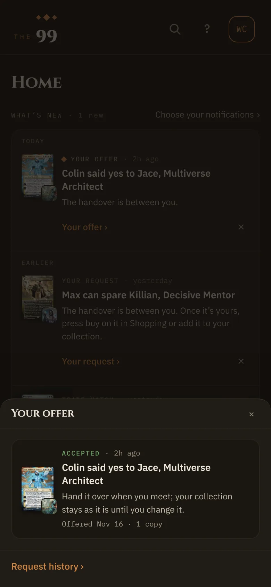

You have it · R2 · the missing surfaces
Three calls on top of the approved You have it (#3216, shipped): offers in Request history for both people, the offerer's answer sheet over Home, and the tile a card draws when you hold spares under your Offer threshold. Rendered from main 7563036 with the shipped request-history row, answer sheet shell, Wishlist tile press, call-out and Settings section; the proposal is scratch-gen/proposal.diff. You are Wren; friends are Colin, Max and Peter.
1 · Offers in Request history, for both people
- The tabs split by who started it. You asked · Asked of you becomes From you · To you: an offer you made sits with your asks, an offer made to you with the asks of you. The answering side is then always the other tab's, so every kicker keeps its meaning.
- The row is the shipped row (card, friend's face, kicker, title, line). Same kickers and inks; the open offer reads Offered where an ask reads Requested. The title's verb and the line tell an offer from an ask: You offered Lathliss to Colin vs You asked Peter for Zimone; a closed offer's line is Offered Nov 16 where an ask's is For Thopter Works · asked Nov 9. No new mark.
- From you: Offered (13 days left. Withdraw it from Colin’s Wishlist tab.), Accepted (Colin said yes to Jace), Declined (Max passed on Tam), No answer, Withdrawn (You withdrew your offer of The Wise Mothman to Colin). The yes and no titles are the Home item's and the push's own words.
- To you: Waiting on you (Max offered you Lathliss, Answer it under Waiting on you.), Accepted / Declined / No answer with the ask's lines. A withdrawn offer never shows on the wanter's side, as a withdrawn ask never shows on the holder's.
- History still only shows: no Yes or No here (AnswerPresses stay on Waiting on you), the whole row opens card details.
2 · The offerer's answer sheet, from their Home item
- The offerer's Home item (Colin said yes to Jace) gains the press Your offer ›, as the ask's answer has Your request ›. Its kicker becomes Your offer: shipped, it reads Your request, which is wrong for an offer.
- The press opens Your offer over Home: the ask's answer sheet shell (ModalChrome 560, phone fit), its body the request-history row for that offer, the foot Request history › to /friends/requests (From you).
- Accepted: Hand it over when you meet; your collection stays as it is until you change it. Declined: Nothing else changes. Under it, mono: Offered Nov 16 · 1 copy.
- No Clear and no AnswerPresses. The offerer has no Your requests row to clear and nothing to answer; the item's own ✕ hides the item, as today.
- Opening takes the item's diamond for the visit. A refused or failed open goes to Request history, as the ask's goes to /friends.
3 · Spares under your Offer threshold, on a friend's wishlist
- The tile says so. A card you hold spare copies of, but fewer than your Offer threshold, draws the same 26px press with the spare glyph in the faint ink and a dashed box: present, plainly not ready. No new control. Its name: You have a spare Polyraptor, under your threshold of 2.
- The key gains under your threshold (faint glyph) when one is drawn. The filter's You can spare · N counts only cards you can offer, and a below-threshold card stays out of it.
- The call-out still appears when the only spares are under the threshold (Hugh's case): You have 1 spare under your threshold / Polyraptor. You offer a card from 2 spare copies; change it in Settings › Spares. No filter then. With offerable spares too, the body ends 2 more are under your threshold.
- The press opens You have this with the row 1 spare / under your threshold of 2, no Offer, and the foot You offer a card only when you have 2 or more spare copies. Change it in Settings › (a link to Settings › Spares).
- Settings gets the pointer: under Offer a card only when I have [2] or more spare copies., This also decides which cards you can offer from a friend’s wishlist. The verb now names two things, so the sentence says it covers both.
- Kept back cards still draw nothing: keeping one back is a choice made per card, where the threshold is a blanket rule that is easy to forget.
Q1 · Split the tabs by who started it, or by which way the card goes?
Recommended: who started it. The kickers keep one meaning per tab, and the tab names are the only change.
Q2 · Should a below-threshold spare still be offerable from the sheet?
Recommended: keep the threshold (drawn). It is your own rule, worded as Offer, and the sheet now says so with a way to change it.
Gaps for engineering (READINESS.md)
- G1 Request history reads offers: the direction becomes who started it (initiated_by), and the non-starting side leaves out withdrawn rows.
- G2 The offer answer sheet: an open action that resolves the Home item to its offer row (holder = the viewer, live friendship).
- G3 The offerer's answer item kicker reads Your request today: one copy key.
- G4 loadHaveIt returns below-threshold cards with the threshold; the /friends chip and the filter keep counting offerable ones only.
- G5 Copy review of every new string (copy strings.ts).

History · From you
Offers among your asks.

Your offer · Accepted
Opened from the Home item.

Under your threshold
Hugh's case: 1 spare, threshold 2.